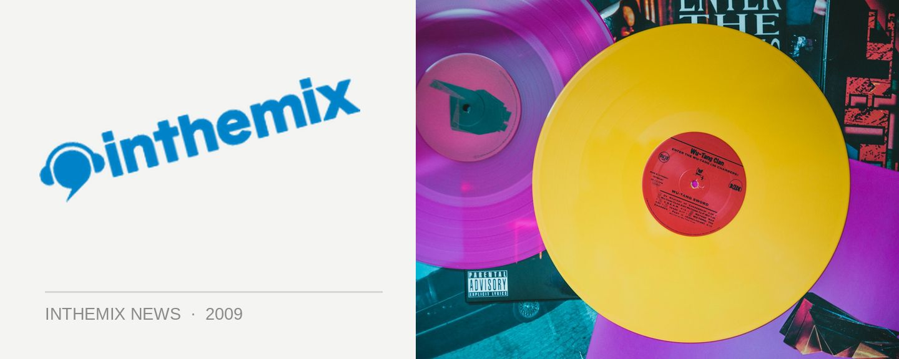

Luke Steele talks flying solo with Empire of the Sun
With Empire of the Sun prepping their extravagant live show for its big debut at Brisbane’s Parklife this weekend, frontman Luke Steele has spoken out on his professional relationship with former member Nick Littlemore, who departed earlier this year to focus again on Pnau (not to mention a musical rendezvous or two with Elton John). According to Steele, Littlemore did the bolt five months ago and left him “with the baby”, as he so succinctly puts it, and he hasn’t spoken with him since.
“Last I heard he’s in Canada and then he’s in Vegas,” Steele told AAP this week of their broken musical union. “(But) as my Dad always says, you’ve got to keep the show on the road.” When asked whether Littlemore was part of the and anymore, he replied, “I really don’t know, hey. He’s just left me with the baby.”
Steele also spoke more on the kind of lavish spectacle we can expect at Parklife over the next two weekends. Not quite as much as he would have liked it seems, but it’s looking like there’s still plenty of multisensory overload planned nonetheless.
“It started out pretty massive and then you begin to realise that you do have to be a pop princess or a billionaire to have these ideas come to fruition,” he said. “So we always get scaled back a bit, but the nucleus of it is the same. It’s pretty special. The level of epic ecstasy intensity will differ, but it’s quite grand … and we’ve got a pretty cooking band to play these songs.” He’s referring to Adelaide band The Swiss, who’ve been thrown into the spotlight with Steele’s wacky and costumed tick of approval.
It’s not long now… The national Parklife tour is proudly presented by ITM, keep your eyes peeled to inthemix.com.au/parklife and check out the national tour dates below…
Sat 26th Sep – Botanic Gardens & Riverstage, Brisbane (SOLD OUT)
Sun 27th Sep – Wellington Square, Perth
Sat 3rd Oct – Birrarung Marr, Melbourne (SOLD OUT)
Sun 4th Oct – Kippax Lake, Moore Park, Sydney (SOLD OUT)
Mon 5th Oct – Botanic Park, Adelaide